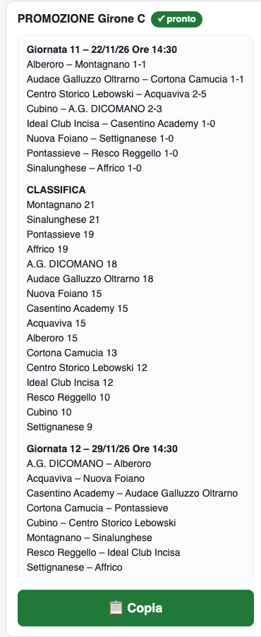

⚽ Risultati della domenica: come si usa
Apri questa pagina (è nei preferiti):
calciomugello.it/redazione-lhjwyli7j56q/incolla
⚽ Vai alla pagina dei risultati · 📄 Scarica la guida da stampare
1
Premi «📋 Copia» sul girone
Risultati, classifica e prossimo turno sono già pronti, scritti come sul sito.
2
In WordPress apri l'articolo di quel girone
Per esempio «PROMOZIONE Girone C».
3
Sostituisci il testo e aggiorna
Clicca nel testo, poi Ctrl+A due volte e Ctrl+V. Infine premi Aggiorna.
Poi passa al girone successivo: sono 8 in tutto.
Se il girone è arancione («manca 1 risultato»), Tuttocampo non ha ancora quel risultato. Scrivilo nelle due caselline, poi premi Copia. La classifica si sistema da sola.

Se un numero non torna, correggilo in WordPress come hai sempre fatto. Per i problemi senti Fabio Ceseri.